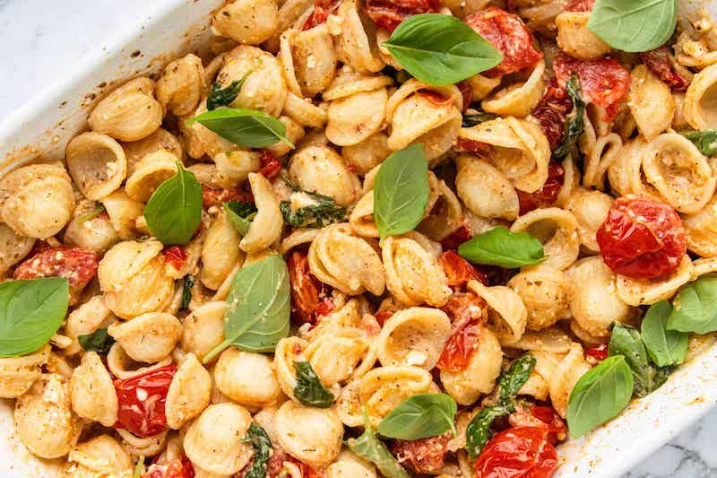

Baked Feta Pasta

A Family Favourite: Quick, Easy, and Delicious
- 500 g ripe cherry OR grape tomatoes
- 8 garlic cloves
- ~200 g of feta cheese
- 400 g large shell pasta
- 1/4 cup extra virgin olive oil (additional if requried)
- 1 teaspoon dried oregano
- handful of fresh basil leaves (not required)
- salt and pepper to taste
- Preheat the oven to 200°C/400°F.
- Add cherry tomatoes + garlic cloves (with skins) to an oven dish.
- Season with oregano, salt, and pepper. Pour over olive oil. Mix together.
- Place block of feta cheese in middle of the dish. Sprinkle more oregano and drizzle olive oil over the block of feta.
- Bake for 25-30 minutes (until tomatoes blistered + feta cheeese softens).
- When tomatoes have 10 minutes left on the cooking time, start to cook the pasta in heavily salted water.
- Take oven dish out. Peel garlic cloves. Mash everything together into a sauce-like consistency.
- Add cooked pasta into dish. Mix well. Add pasta water if required.